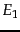
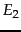
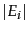
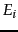
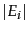
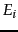

Next:
Near-duplicates and shingling
Up:
Web search basics
Previous:
User query needs
Contents
Index
Index size and estimation
To a first approximation, comprehensiveness grows with index size, although it does matter which specific pages a search engine indexes - some pages are more informative than others. It is also difficult to reason about the fraction of the Web indexed by a search engine, because there is an infinite number of dynamic web pages; for instance,
http://www.yahoo.com/any_string returns a valid HTML page rather than an error, politely informing the user that there is no such page at Yahoo! Such a "soft 404 error" is only one example of many ways in which web servers can generate an infinite number of valid web pages. Indeed, some of these are malicious
spider traps devised to cause a search engine's crawler (the component that systematically gathers web pages for the search engine's index, described in Chapter
20 ) to stay within a spammer's website and index many pages from that site.
We could ask the following better-defined question: given two search engines, what are the relative sizes of their indexes? Even this question turns out to be imprecise, because:
- In response to queries a search engine can return web pages whose contents it has not (fully or even partially) indexed. For one thing, search engines generally index only the first few thousand words in a web page. In some cases, a search engine is aware of a page
 that is linked to by pages it has indexed, but has not indexed itself. As we will see in Chapter 21 , it is still possible to meaningfully return in search results.
that is linked to by pages it has indexed, but has not indexed itself. As we will see in Chapter 21 , it is still possible to meaningfully return in search results.
- Search engines generally organize their indexes in various tiers and partitions, not all of which are examined on every search (recall tiered indexes from Section 7.2.1 ). For instance, a web page deep inside a website may be indexed but not retrieved on general web searches; it is however retrieved as a result on a search that a user has explicitly restricted to that website (such site-specific search is offered by most web search engines).
Thus, search engine indexes include multiple classes of indexed pages, so that there is no single measure of index size. These issues notwithstanding, a number of techniques have been devised for crude estimates of the ratio of the index sizes of two search engines,
 and
. The basic hypothesis underlying these techniques is that each search engine indexes a fraction of the Web chosen independently and uniformly at random. This involves some questionable assumptions: first, that there is a finite size for the Web from which each search engine chooses a subset, and second, that each engine chooses an independent, uniformly chosen subset. As will be clear from the discussion of crawling in Chapter
20 , this is far from true. However, if we begin with these assumptions, then we can invoke a classical estimation technique known as the
capture-recapture method .
Suppose that we could pick a random page from the index of and test whether it is in 's index and symmetrically, test whether a random page from is in . These experiments give us fractions  and
and  such that our estimate is that a fraction of the pages in are in , while a fraction of the pages in are in . Then, letting  denote the size of the index of search engine , we have
such that our estimate is that a fraction of the pages in are in , while a fraction of the pages in are in . Then, letting  denote the size of the index of search engine , we have
from which we have the form we will use
 |
(246) |
If our assumption about
and
being independent and uniform random subsets of the Web were true, and our sampling process unbiased, then Equation
246 should give us an unbiased estimator for
 . We distinguish between two scenarios here. Either the measurement is performed by someone with access to the index of one of the search engines (say an employee of
), or the measurement is performed by an independent party with no access to the innards of either search engine. In the former case, we can simply pick a random document from one index. The latter case is more challenging; by picking a random page from one search engine
from outside the search engine, then verify whether the random page is present in the other search engine.
. We distinguish between two scenarios here. Either the measurement is performed by someone with access to the index of one of the search engines (say an employee of
), or the measurement is performed by an independent party with no access to the innards of either search engine. In the former case, we can simply pick a random document from one index. The latter case is more challenging; by picking a random page from one search engine
from outside the search engine, then verify whether the random page is present in the other search engine.
To implement the sampling phase, we might generate a random page from the entire (idealized, finite) Web and test it for presence in each search engine. Unfortunately, picking a web page uniformly at random is a difficult problem. We briefly outline several attempts to achieve such a sample, pointing out the biases inherent to each; following this we describe in some detail one technique that much research has built on.
- Random searches: Begin with a search log of web searches; send a random search from this log to and a random page from the results. Since such logs are not widely available outside a search engine, one implementation is to trap all search queries going out of a work group (say scientists in a research center) that agrees to have all its searches logged. This approach has a number of issues, including the bias from the types of searches made by the work group. Further, a random document from the results of such a random search to is not the same as a random document from .
- Random IP addresses: A second approach is to generate random IP addresses and send a request to a web server residing at the random address, collecting all pages at that server. The biases here include the fact that many hosts might share one IP (due to a practice known as virtual hosting) or not accept http requests from the host where the experiment is conducted. Furthermore, this technique is more likely to hit one of the many sites with few pages, skewing the document probabilities; we may be able to correct for this effect if we understand the distribution of the number of pages on websites.
- Random walks: If the web graph were a strongly connected directed graph, we could run a random walk starting at an arbitrary web page. This walk would converge to a steady state distribution (see Chapter 21 , Section 21.2.1 for more background material on this), from which we could in principle pick a web page with a fixed probability. This method, too has a number of biases. First, the Web is not strongly connected so that, even with various corrective rules, it is difficult to argue that we can reach a steady state distribution starting from any page. Second, the time it takes for the random walk to settle into this steady state is unknown and could exceed the length of the experiment.
Clearly each of these approaches is far from perfect. We now describe a fourth sampling approach, random queries. This approach is noteworthy for two reasons: it has been successfully built upon for a series of increasingly refined estimates, and conversely it has turned out to be the approach most likely to be misinterpreted and carelessly implemented, leading to misleading measurements. The idea is to pick a page (almost) uniformly at random from a search engine's index by posing a random query to it. It should be clear that picking a set of random terms from (say) Webster's dictionary is not a good way of implementing this idea. For one thing, not all vocabulary terms occur equally often, so this approach will not result in documents being chosen uniformly at random from the search engine. For another, there are a great many terms in web documents that do not occur in a standard dictionary such as Webster's. To address the problem of vocabulary terms not in a standard dictionary, we begin by amassing a sample web dictionary. This could be done by crawling a limited portion of the Web, or by crawling a manually-assembled representative subset of the Web such as Yahoo! (as was done in the earliest experiments with this method). Consider a conjunctive query with two or more randomly chosen words from this dictionary.
Operationally, we proceed as follows: we use a random conjunctive query on and pick from the top 100 returned results a page at random. We then test for presence in by choosing 6-8 low-frequency terms in and using them in a conjunctive query for . We can improve the estimate by repeating the experiment a large number of times. Both the sampling process and the testing process have a number of issues.
- Our sample is biased towards longer documents.
- Picking from the top 100 results of induces a bias from the ranking algorithm of . Picking from all the results of makes the experiment slower. This is particularly so because most web search engines put up defenses against excessive robotic querying.
- During the checking phase, a number of additional biases are introduced: for instance, may not handle 8-word conjunctive queries properly.
- Either or may refuse to respond to the test queries, treating them as robotic spam rather than as bona fide queries.
- There could be operational problems like connection time-outs.
A sequence of research has built on this basic paradigm to eliminate some of these issues; there is no perfect solution yet, but the level of sophistication in statistics for understanding the biases is increasing. The main idea is to address biases by estimating, for each document, the magnitude of the bias. From this, standard statistical sampling methods can generate unbiased samples. In the checking phase, the newer work moves away from conjunctive queries to phrase and other queries that appear to be better-behaved. Finally, newer experiments use other sampling methods besides random queries. The best known of these is document random walk sampling, in which a document is chosen by a random walk on a virtual graph derived from documents. In this graph, nodes are documents; two documents are connected by an edge if they share two or more words in common. The graph is never instantiated; rather, a random walk on it can be performed by moving from a document  to another by picking a pair of keywords in , running a query on a search engine and picking a random document from the results. Details may be found in the references in Section 19.7 .
to another by picking a pair of keywords in , running a query on a search engine and picking a random document from the results. Details may be found in the references in Section 19.7 .
Exercises.
- Two web search engines A and B each generate a large number of pages uniformly at random from their indexes. 30% of A's pages are present in B's index, while 50% of B's pages are present in A's index. What is the number of pages in A's index relative to B's?
Next:
Near-duplicates and shingling
Up:
Web search basics
Previous:
User query needs
Contents
Index
© 2008 Cambridge University Press
This is an automatically generated page. In case of formatting errors you may want to look at the PDF edition of the book.
2009-04-07